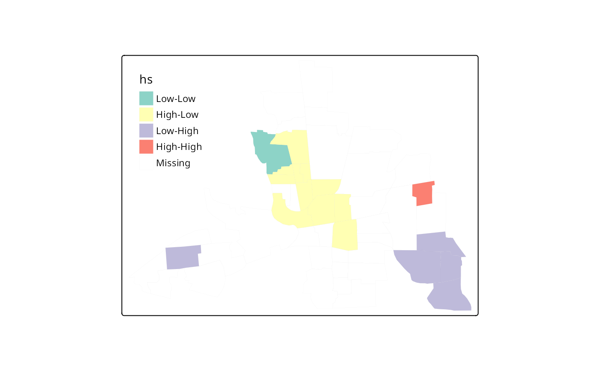

Compute the Local Bivariate Moran's I Statistic
localmoran_bv.RdGiven two continuous numeric variables, calculate the bivariate Local Moran's I.
Usage
localmoran_bv(x, y, listw, nsim = 199, scale = TRUE, alternative="two.sided",
iseed=1L, no_repeat_in_row=FALSE, zero.policy=attr(listw, "zero.policy"))Arguments
- x
a numeric vector of same length as
y.- y
a numeric vector of same length as
x.- listw
a listw object for example as created by
nb2listw().- nsim
the number of simulations to run.
- scale
default
TRUE.- alternative
a character string specifying the alternative hypothesis, must be one of "greater" (default), "two.sided", or "less".
- iseed
default NULL, used to set the seed; the output will only be reproducible if the count of CPU cores across which computation is distributed is the same.
- no_repeat_in_row
default
FALSE, ifTRUE, sample conditionally in each row without replacements to avoid duplicate values, https://github.com/r-spatial/spdep/issues/124- zero.policy
default default
attr(listw, "zero.policy")as set whenlistwwas created, if attribute not set, use global option value; if TRUE assign zero to the lagged value of zones without neighbours, if FALSE assign NA
Value
a data.frame containing two columns Ib and p_sim containing the local bivariate Moran's I and simulated p-values respectively.
Details
The Bivariate Local Moran, like its global counterpart, evaluates the value of x at observation i with its spatial neighbors' value of y. The value of \(I_i^B\) is xi * Wyi. Or, in simpler words, the local bivariate Moran is the result of multiplying x by the spatial lag of y. Formally it is defined as
\( I_i^B= cx_i\Sigma_j{w_{ij}y_j} \)
References
Anselin, Luc, Ibnu Syabri, and Oleg Smirnov. 2002. “Visualizing Multivariate Spatial Correlation with Dynamically Linked Windows.” In New Tools for Spatial Data Analysis: Proceedings of the Specialist Meeting, edited by Luc Anselin and Sergio Rey. University of California, Santa Barbara: Center for Spatially Integrated Social Science (CSISS).
Author
Josiah Parry josiah.parry@gmail.com
Examples
# load columbus datay
columbus <- st_read(system.file("shapes/columbus.gpkg", package="spData"))
#> Reading layer `columbus' from data source
#> `C:\Users\rzomor2\AppData\Local\R\win-library\4.4\spData\shapes\columbus.gpkg'
#> using driver `GPKG'
#> Simple feature collection with 49 features and 20 fields
#> Geometry type: POLYGON
#> Dimension: XY
#> Bounding box: xmin: 5.874907 ymin: 10.78863 xmax: 11.28742 ymax: 14.74245
#> Projected CRS: Undefined Cartesian SRS with unknown unit
nb <- poly2nb(columbus)
listw <- nb2listw(nb)
set.seed(1)
(res <- localmoran_bv(columbus$CRIME, columbus$INC, listw, nsim = 499))
#> Ibvi E.Ibvi Var.Ibvi Z.Ibvi Pr(z != E(Ibvi))
#> [1,] -0.8578252210 -1.826370e-02 0.731541578 -0.98159654 3.262987e-01
#> [2,] 0.1802618568 2.554658e-02 0.334247968 0.26760782 7.890012e-01
#> [3,] 0.0118856298 7.791116e-03 0.017162929 0.03125407 9.750669e-01
#> [4,] -0.0163525887 -3.452848e-03 0.005852145 -0.16862558 8.660912e-01
#> [5,] -0.5037734606 1.811633e-02 0.101966376 -1.63436973 1.021812e-01
#> [6,] -0.0041841415 1.293651e-02 0.139142736 -0.04589760 9.633919e-01
#> [7,] 1.5201688711 -1.466392e-04 1.099034279 1.45020069 1.470026e-01
#> [8,] -0.2016456990 7.471406e-03 0.007231278 -2.45913301 1.392730e-02
#> [9,] 0.0297432891 1.600490e-03 0.009219518 0.29309821 7.694471e-01
#> [10,] -0.0374203146 1.218906e-03 0.001100110 -1.16495823 2.440359e-01
#> [11,] -1.2368494456 7.720869e-02 0.498286158 -1.86155199 6.266627e-02
#> [12,] -1.2010054212 4.055009e-02 0.266658169 -2.40430022 1.620346e-02
#> [13,] -0.5377131737 1.218864e-02 0.122363375 -1.57202494 1.159448e-01
#> [14,] -0.9879712511 3.048475e-02 0.320475271 -1.79905736 7.200961e-02
#> [15,] -0.6057303757 2.137030e-02 0.102916086 -1.95476986 5.061024e-02
#> [16,] -0.7878039284 1.378587e-02 0.161039891 -1.99749384 4.577156e-02
#> [17,] 0.1379508106 9.352179e-04 0.003351141 2.36686570 1.793944e-02
#> [18,] -0.3253226893 1.066349e-02 0.078469609 -1.19941831 2.303653e-01
#> [19,] -0.3888822685 -7.104732e-06 0.432305953 -0.59144532 5.542221e-01
#> [20,] -0.4544889957 1.367811e-01 0.355060554 -0.99228105 3.210604e-01
#> [21,] -0.0006014046 3.919068e-03 0.031597455 -0.02543067 9.797114e-01
#> [22,] -0.0068813684 -3.664201e-03 0.001242910 -0.09125440 9.272904e-01
#> [23,] -0.8788967496 1.189579e-02 0.289002627 -1.65701209 9.751703e-02
#> [24,] -0.1256865340 -3.048451e-03 0.004692164 -1.79035349 7.339710e-02
#> [25,] -0.9307459211 4.509269e-02 0.303474056 -1.77140234 7.649382e-02
#> [26,] -0.2252775788 1.039843e-02 0.019527743 -1.68651169 9.169728e-02
#> [27,] 0.1413018326 -1.409345e-02 0.236810168 0.31932848 7.494774e-01
#> [28,] -0.7804482928 3.200178e-02 0.184987862 -1.88897002 5.889585e-02
#> [29,] -0.7654416689 5.928648e-02 0.364667175 -1.36572255 1.720261e-01
#> [30,] -0.9074829015 7.597435e-03 0.737090639 -1.06585659 2.864885e-01
#> [31,] -0.5510119267 -1.377557e-03 0.388899970 -0.88136323 3.781213e-01
#> [32,] -1.9581476375 2.561515e-02 0.239115219 -4.05682367 4.974461e-05
#> [33,] 0.0907015890 3.048227e-02 0.043681309 0.28812970 7.732475e-01
#> [34,] -0.4297843082 2.130996e-02 0.104683121 -1.39421250 1.632534e-01
#> [35,] 0.1181174820 6.746380e-04 0.008393054 1.28193663 1.998649e-01
#> [36,] -0.9901007017 2.760845e-02 0.278368628 -1.92891697 5.374117e-02
#> [37,] -0.2195812498 -7.723065e-03 0.032151838 -1.18152344 2.373948e-01
#> [38,] -0.3096268627 3.401135e-02 0.205499338 -0.75804717 4.484227e-01
#> [39,] -0.6090192229 1.689079e-02 0.308320019 -1.12722610 2.596469e-01
#> [40,] -1.2709838927 6.528265e-02 0.216905961 -2.86917707 4.115413e-03
#> [41,] -1.3940681427 9.430182e-02 0.304439982 -2.69749131 6.986411e-03
#> [42,] -0.4820987026 3.961324e-02 0.632999863 -0.65573592 5.119941e-01
#> [43,] -0.0064402410 2.939096e-03 0.001385154 -0.25201308 8.010310e-01
#> [44,] 0.0761664412 2.162964e-02 0.054095662 0.23448142 8.146113e-01
#> [45,] -0.0560342555 7.788766e-03 0.029796273 -0.36973996 7.115763e-01
#> [46,] -0.8249832451 -2.301643e-02 0.673531467 -0.97718648 3.284768e-01
#> [47,] -0.8915318222 2.294960e-02 0.095247718 -2.96310881 3.045489e-03
#> [48,] -0.1282863305 -9.674295e-03 0.061579149 -0.47798241 6.326627e-01
#> [49,] 0.0094888641 -4.828535e-03 0.222107368 0.03037964 9.757643e-01
#> Pr(z != E(Ibvi)) Sim Pr(folded) Sim
#> [1,] 0.324 0.162
#> [2,] 0.880 0.440
#> [3,] 0.976 0.488
#> [4,] 0.800 0.400
#> [5,] 0.112 0.056
#> [6,] 0.864 0.430
#> [7,] 0.096 0.048
#> [8,] 0.004 0.002
#> [9,] 0.852 0.426
#> [10,] 0.260 0.130
#> [11,] 0.056 0.028
#> [12,] 0.008 0.004
#> [13,] 0.084 0.042
#> [14,] 0.064 0.032
#> [15,] 0.052 0.026
#> [16,] 0.028 0.014
#> [17,] 0.028 0.014
#> [18,] 0.192 0.096
#> [19,] 0.608 0.304
#> [20,] 0.368 0.184
#> [21,] 0.936 0.468
#> [22,] 0.928 0.464
#> [23,] 0.120 0.060
#> [24,] 0.040 0.020
#> [25,] 0.044 0.022
#> [26,] 0.076 0.038
#> [27,] 0.736 0.368
#> [28,] 0.032 0.016
#> [29,] 0.140 0.070
#> [30,] 0.284 0.142
#> [31,] 0.408 0.204
#> [32,] 0.004 0.002
#> [33,] 0.724 0.362
#> [34,] 0.188 0.094
#> [35,] 0.216 0.108
#> [36,] 0.084 0.042
#> [37,] 0.232 0.116
#> [38,] 0.464 0.232
#> [39,] 0.268 0.134
#> [40,] 0.004 0.002
#> [41,] 0.020 0.010
#> [42,] 0.468 0.234
#> [43,] 0.884 0.442
#> [44,] 0.904 0.452
#> [45,] 0.672 0.336
#> [46,] 0.344 0.172
#> [47,] 0.012 0.006
#> [48,] 0.544 0.272
#> [49,] 0.896 0.448
#> attr(,"quadr")
#> mean median pysal
#> 1 Low-High Low-High Low-High
#> 2 Low-Low Low-Low Low-Low
#> 3 Low-Low Low-Low Low-Low
#> 4 Low-High Low-High Low-High
#> 5 High-Low High-Low High-Low
#> 6 Low-Low Low-High Low-High
#> 7 Low-Low Low-Low Low-Low
#> 8 High-Low High-Low High-Low
#> 9 Low-Low Low-Low Low-Low
#> 10 Low-High Low-High Low-High
#> 11 High-Low High-Low High-Low
#> 12 High-Low High-Low High-Low
#> 13 High-Low High-Low High-Low
#> 14 High-Low High-Low High-Low
#> 15 High-Low High-Low High-Low
#> 16 High-Low High-Low High-Low
#> 17 High-High High-High High-High
#> 18 High-Low High-Low High-Low
#> 19 High-Low High-Low High-Low
#> 20 Low-High Low-High Low-High
#> 21 High-Low High-High High-Low
#> 22 Low-High Low-High Low-High
#> 23 Low-High Low-High Low-High
#> 24 High-Low High-Low High-Low
#> 25 High-Low High-Low High-Low
#> 26 High-Low High-Low High-Low
#> 27 High-High High-High High-High
#> 28 High-Low High-Low High-Low
#> 29 High-Low High-Low High-Low
#> 30 High-Low High-Low High-Low
#> 31 Low-High Low-High Low-High
#> 32 Low-High Low-High Low-High
#> 33 High-High High-High High-High
#> 34 Low-High Low-High Low-High
#> 35 High-High High-High High-High
#> 36 Low-High Low-High Low-High
#> 37 High-Low High-Low High-Low
#> 38 High-Low High-Low High-Low
#> 39 Low-High Low-High Low-High
#> 40 Low-High Low-High Low-High
#> 41 Low-High Low-High Low-High
#> 42 Low-High Low-High Low-High
#> 43 High-Low High-Low High-Low
#> 44 Low-Low Low-Low Low-Low
#> 45 Low-High Low-High Low-High
#> 46 Low-High Low-High Low-High
#> 47 Low-High Low-High Low-High
#> 48 Low-High Low-High Low-High
#> 49 Low-Low Low-Low Low-Low
#> attr(,"class")
#> [1] "localmoran" "matrix" "array"
#> attr(,"ncpus")
#> [1] 1
columbus$hs <- hotspot(res, Prname="Pr(folded) Sim", cutoff=0.05,
quadrant.type="pysal", p.adjust="none")
# \donttest{
if (require("tmap", quietly=TRUE)) {
tmap4 <- packageVersion("tmap") >= "3.99"
if (tmap4) {
tm_shape(columbus) + tm_polygons(fill="hs",
fill.scale=tm_scale(values="brewer.set3"),
fill.legend=tm_legend(position=tm_pos_in("left", "top"),
frame=FALSE, item.r=0), lwd=0.01)
} else {
tm_shape(columbus) + tm_fill("hs")
}
}
# }
moran.plot(x=columbus$CRIME, y=columbus$INC, listw=listw)
